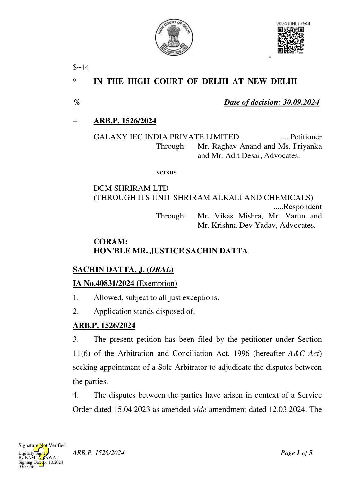
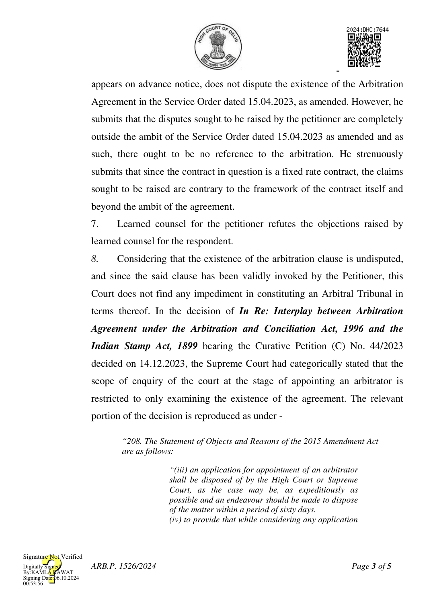

said Service Order pertains to the instrumentation, supply and calibration works for 850 TPD Chlor Alkali Expansion Project and 600 TPD Flaker Plant at Jhangadia, Gujarat. The said Service Order contains an Arbitration Agreement which reads as under:- “5. ARBITRATION: a. All disputes arising out of or in connection with this order, including any question regarding its existence, validity or termination, shall, unless amicably settled between the parties, be finally settled by arbitration. The parties shall mutually agree and appoint a sole arbitrator. Notwithstanding towhat is stated above, if the parties cannot mutually agree on an arbitrator within 4 four weeks from the date of invocation of arbitration, then the Arbitrator shall be appointed in accordance with rule of Arbitration and Conciliation Act, 1996. The arbitration proceedings shall be conducted as per the Arbitration and Conciliation Act 1996, and any modifications thereto and re-enactments thereof. The seat of arbitration shall be Delhi. The language to be used in arbitration proceedings shall be English. b. Each party submits to the Laws of India and jurisdiction of courts of Delhi for the purposes only of compelling compliance with the above arbitrationprovisions and for enforcement of any arbitration award made in accordance with the above provision.”
- Disputes having been arisen between the parties, an arbitration notice dated 19.06.2024 was sent by the petitioner to the respondent whereby the petitioner invoked the aforesaid arbitration clause and proposed the name of a person for being appointed as a Sole Arbitrator. By reply dated 30.07.2024, the said notice was refuted by the respondent. It was stated therein that the disputes sought to be raised are outside the ambit of the agreement. Further, it was stated that there exists no valid arbitration agreement covering the claims sought to be raised. Consequently, the respondent did not accede to the appointment of a Sole Arbitrator to adjudicate the disputes between the parties.
- During the course of hearing, learned counsel for the respondent who ARB.P. 1526/2024

for appointment of arbitrator, the High Court or the Supreme Court shall examine the existence of a prima facie arbitration agreement and not other issues.”
- The above extract indicates that the Supreme Court or High Court at the stage of the appointment of an arbitrator shall “examine the existence of a prima facie arbitration agreement and not other issues”. These other issues not only pertain to the validity of the arbitration agreement, but also include any other issues which are a consequence of unnecessary judicial interference in the arbitration proceedings...................................................”
(emphasis supplied)
- Accordingly, Ms. Justice (Retd.) Deepa Sharma, Former Judge, Delhi High Court (Mobile No.:9910384631) is appointed as the Sole Arbitrator to adjudicate the disputes between the parties arising out of the Arbitration Agreement contained in the Service Order dated 15.04.2023. It is further directed that the learned sole Arbitrator shall consider, at the outset, the jurisdictional/ preliminary objection/s raised on behalf of the Respondent. The respondent shall be at liberty to move an application under Section 16 of the A&C Act in this regard.
- The learned Sole Arbitrator may proceed with the arbitration proceedings subject to furnishing to the parties requisite disclosure as required under Section 12 of the A&C Act.
- It is agreed between the parties that the arbitration shall take place under the aegis of and under the rules of Delhi International Arbitration Centre (DIAC). It is directed accordingly.
- It is clarified that this Court has not expressed any opinion as regards merits or demerits thereof of the respective contentions of the parties, including as regards the jurisdictional objections raised by the respondent. It shall be open to the learned Sole Arbitrator to duly consider the same and
ARB.P. 1526/2024
pass appropriate order/s thereon.
- The present petition stands disposed of in the above terms.
SACHIN DATTA, J
SEPTEMBER 30, 2024/at
ARB.P. 1526/2024